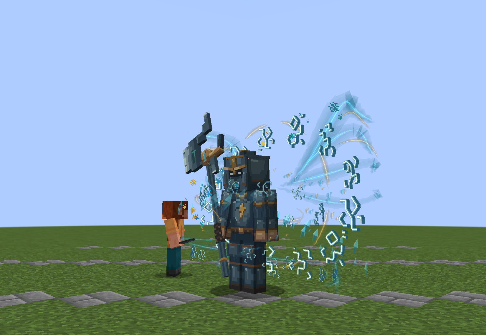
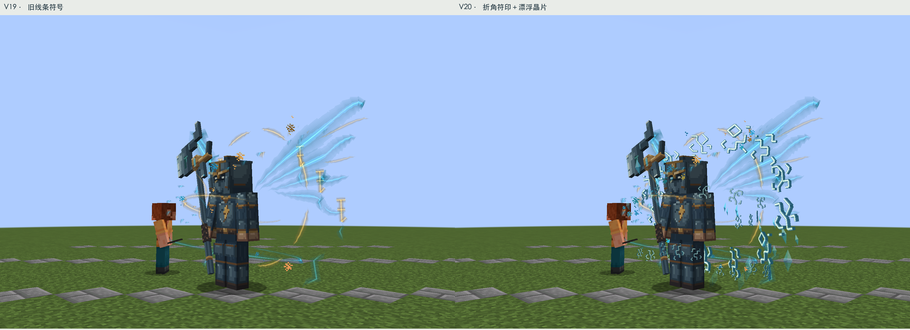
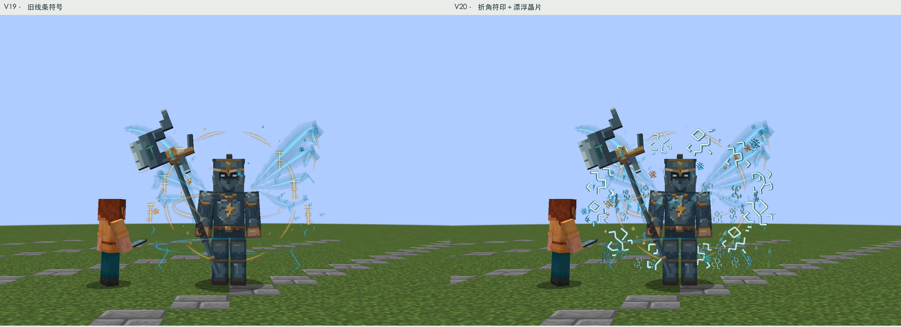
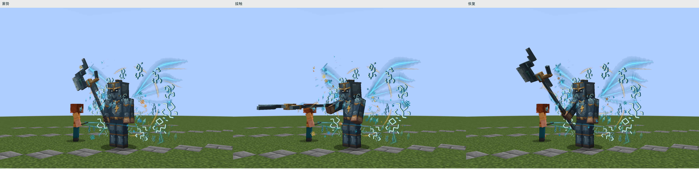
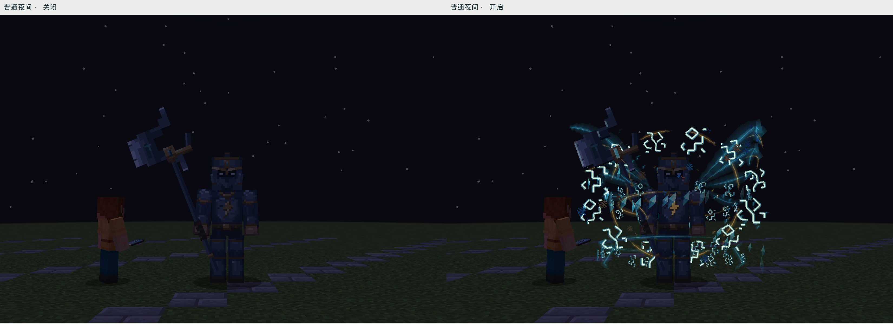
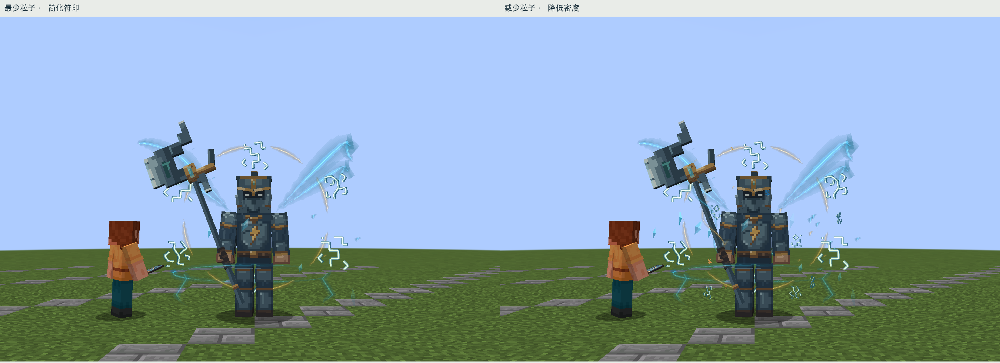

九霄天将 · 悬浮符印与晶片 V20
移除旧版“王字式”符号。四组原创折角符印，带断笔、分支和错落的小印记；冷色表面、暗侧面与暖亮芯形成厚度感。模型、头部、武器和动作保持原样。本版仅改天将，其他Boss等待你验收后再做。

4.8秒无声实机采样：大符印缓慢偏转，小符文环绕，晶片与光屑上升。 0.0秒
同机位前后对照

左旧版、右新版；同8米、FOV70、相同裁切和普通日光，不借相机缩放增加体量。
正面：主符印围绕身体后方，碎符环带与光屑分层。增加了多少
普通粒子设置下：6枚旧符号改为12枚主符印＋24枚环绕小符文；增加36片有明暗面的漂浮晶片；细光屑轨迹42条增至84条。实际小粒子发射从待机每4tick 7枚提高到10枚，挥击时14枚光屑及至多1枚电光，仍受原有全局16枚预算限制。它们都是客户端视觉效果，没有新实体、碰撞或伤害。
减少/最少粒子设置会降低符印、晶片与光屑数量，远距离也会简化。数量增加并不等于发出同样多的服务器实体。

原有攻击蓄势、接触、恢复；大戟导流继续跟随真实动作。
普通夜间开关对照，不用后期提亮截图。
粒子设置降级；最少设置不发射额外粒子，仍保留少量简化符印。实际参考与返工
诡厄巫法：读取了本地2.5.49.3的使徒气场与召唤图案，实际查看折线分组、连贯密度和形状组织。没有复制原图或直接改色。
Overlord III 第12话官方静帧：实际查看第5张法阵画面，学习大环带、小符号与中央人物的尺度关系。仅作静帧研究，没有声称看过完整特效动画。查看参考原图。
第一轮已经增加符文，但整圈金黄偏像金属挂件；第二轮增加断笔和分支，改为冷面、暗侧、暖芯，保留厚度而减轻“字牌”感。
检查与验收范围
构建通过（跳过通用测试）；19个受控实机状态通过，24帧待机连续采样。基础模型、贴图、动画与认可版本逐字节相同。没有修改其他Boss，也没有改战斗机制。自然战斗、多人负载和第三方光影仍待验证。
参考记录 · 验证记录 · 实机状态记录 · 上一版